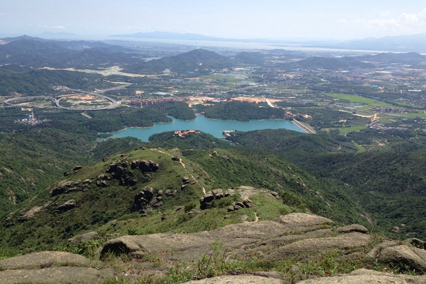

-
千风万景中遇见你 - 首页
- 精选
- 邂逅
-

- 消息

目的地>中国>珠海
Zhu Hai


珠海

珠海天气
晴 11℃~22℃
142人来过这里
26篇旅游日志
26篇旅游日志
景点介绍
珠海自然环境优美，山清水秀，海域广阔，有一百多个海岛，素有“百岛之市”美称。城市规划和建设独具匠心，突出旅游意识，自然和谐，优雅别致，极富海滨花园情调和现代气息。
1991年，珠海以整体城市形象为景观被国家旅游局评为“中国旅游胜地四十佳”之一。 这里气候宜人，冬夏季风交替明显，终年气温较高，属南亚热带与热带过渡型海洋性气候。，宁静、休闲是人们对珠海的第一印象。
在珠海，每两年举办一次国际航空航天博览会和珠海电影节，两大盛事在国内外影响极大。珠海还建有国际赛车场，每年都有国际性的汽车赛事举办，对广大汽车运动爱好者具有极大的吸引。
百岛之市，毗邻澳门使她成为经济特区，典型的亚热带风光、宁静休闲的生活方式使人们对她流连忘返。温泉不错，空气非常好。生活很悠闲，还有浪漫的情侣路。
景点美照

- 2016-2017© 遇见网® yujian.com All rights reserved.Version v1.00
遇见网为旅行爱好者提供记录自己旅途见闻并展示的个人空间。